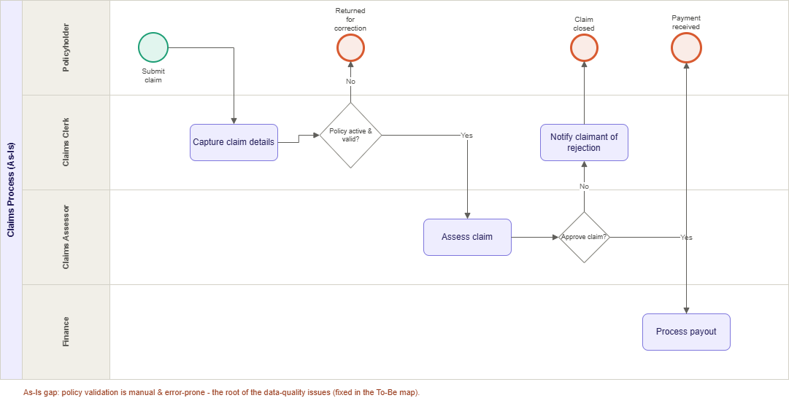
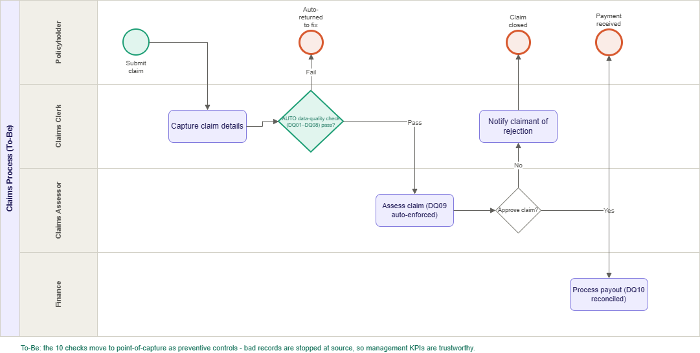

📊 Live Dashboard
Interactive Power BI report covering the executive summary, risk & profitability, and the data-quality scorecard, all built on the SQL views.
🎯 Project Overview
An end-to-end framework for a life-insurance book. It generates a realistic policy, premium, and claims dataset in T-SQL, runs a set of automated data-quality checks, defines every management metric as a documented SQL view, and feeds a Power BI dashboard. The data quality, calculation logic, and reporting all sit in one version-controlled repository.
✅ Data Quality Engine
- 10 validation rules across the five DAMA dimensions: Completeness, Validity, Uniqueness, Consistency, and Accuracy
- Each rule carries a severity (Critical / High / Medium) and logs records checked vs records failed
- Referential-integrity, uniqueness, and business-rule checks (e.g. premium > 0, claim ≤ sum assured)
- A scorecard with a pass rate per rule, rebuilt cleanly each time it runs
Each check counts the rows it looked at and the rows that fail, then writes the result to a scorecard table. For example, the referential-integrity check:
-- DQ07: every policy must link to a customer that exists
INSERT INTO dq.results (rule_id, dimension, severity, records_checked, records_failed)
SELECT 'DQ07', 'Consistency', 'Critical',
COUNT(*),
SUM(CASE WHEN c.customer_id IS NULL THEN 1 ELSE 0 END)
FROM dw.policies p
LEFT JOIN dw.customers c ON c.customer_id = p.customer_id;🧮 Calculation Framework
- Core insurance metrics defined once as documented, version-controlled SQL views
- Loss Ratio, Lapse Rate, Persistency, Annualised Premium Income, and claims frequency
- Power BI reads these views directly, so the calculation logic lives in one place instead of being repeated in DAX
- Every formula documented in a change-controlled specification alongside the code
Each metric is a SQL view. Loss ratio compares approved claims against earned premium, per product:
CREATE OR ALTER VIEW dw.vw_loss_ratio AS
WITH earned AS (
SELECT p.product, SUM(pr.amount) AS earned_premium
FROM dw.premiums pr
JOIN dw.policies p ON p.policy_id = pr.policy_id
WHERE pr.status = 'Paid'
GROUP BY p.product
),
incurred AS (
SELECT p.product, SUM(cl.claim_amount) AS claims_paid
FROM dw.claims cl
JOIN dw.policies p ON p.policy_id = cl.policy_id
WHERE cl.decision = 'Approved'
GROUP BY p.product
)
SELECT e.product, e.earned_premium, ISNULL(i.claims_paid, 0) AS claims_paid,
CAST(100.0 * ISNULL(i.claims_paid, 0) / NULLIF(e.earned_premium, 0)
AS DECIMAL(6,2)) AS loss_ratio_pct
FROM earned e
LEFT JOIN incurred i ON i.product = e.product;The Power BI data-quality page uses a few DAX measures over the scorecard table:
Total Failed = SUM('results'[records_failed])
Rules Failing = CALCULATE(COUNTROWS('results'), 'results'[records_failed] > 0)
Pass Rate % =
DIVIDE(
SUM('results'[records_checked]) - SUM('results'[records_failed]),
SUM('results'[records_checked])
)📈 Results
- ~5,000 policies and ~140,000 premium transactions modelled with defects injected on purpose
- Data-quality scorecard surfaces every seeded defect with a full audit trail
- Realistic management KPIs: overall loss ratio around 60%, lapse rate around 18%
- Three-page Power BI report: Executive Summary, Risk & Profitability, Data Quality Scorecard
🗺️ Process Analysis (As-Is → To-Be)
Beyond the data-quality engine, I mapped the life-insurance claims process to show where the defects originate, then redesigned it so the checks run at the point of capture instead of downstream. This is the business-analysis layer: current-state mapping, root-cause findings, and an improved future-state design.
As-Is: validation is manual and happens after records already exist, so bad data reaches the reports before it is caught:

- Policy validation is manual, which is the root cause of the data-quality failures
- Critical defects (duplicate policy IDs, broken customer links, over-claims) reach the management KPIs before they are detected
- Loss ratio, lapse rate, and persistency are built on unvalidated data
To-Be: the 10 checks move to the point of capture as automated preventive controls, so errors are stopped at source:

- DQ01–DQ08 run automatically at capture; failing records are returned before they enter the book
- DQ09 (claim ≤ sum assured) is enforced at assessment, and DQ10 reconciles premium at payout
- The scorecard becomes ongoing monitoring rather than the first place errors are found
Techniques applied: BPMN process mapping, requirements & gap analysis, and the DAMA data-quality dimensions. Full write-up in the process analysis document.